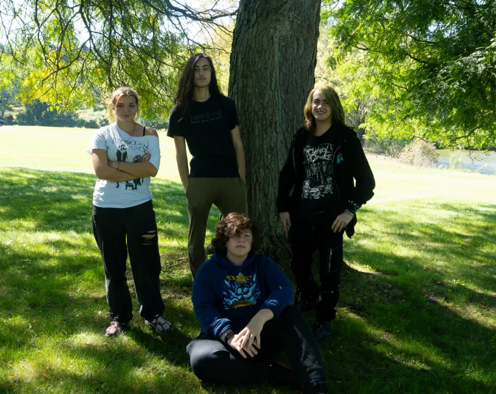

The Apollo Project
Band Members

From left to right: Andi VanBortel, Simon Thomas, Jay Mastellar, Marlowe Mauer
Simon Thomas - Drums, Guitar (Studio)
Simon Thomas is an Scottish-American multi-instrumentalist and the drummer, guitarist, and a founding member of The Apollo Project. Growing up, Simon acquired interests in bands such as Chevelle, Incubus, Linkin Park, Breaking Benjamin, and TOOL from his parents. Eventually choosing to pursue guitar, Simon delved further into music discovering a deep love progressive rock bands. A particular interest in Dream Theater led Simon to pick up bass, drums, and keys. Later discovering bands such as The Mars Volta and Porcupine Tree, Simon developed a unique affinity for incorporating ambient soundscapes into progressive metal.
Jay Mastellar - Rhythm Guitar, Vocals
In Progress!
Andi VanBortel - Bass
In Progress!
Marlowe Mauer - Keys
In Progress!